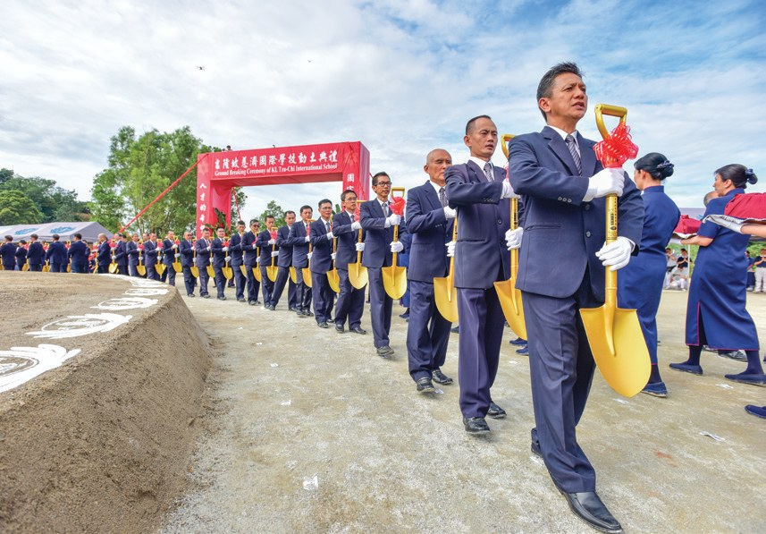
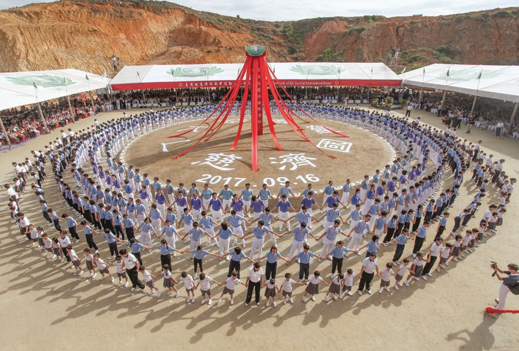
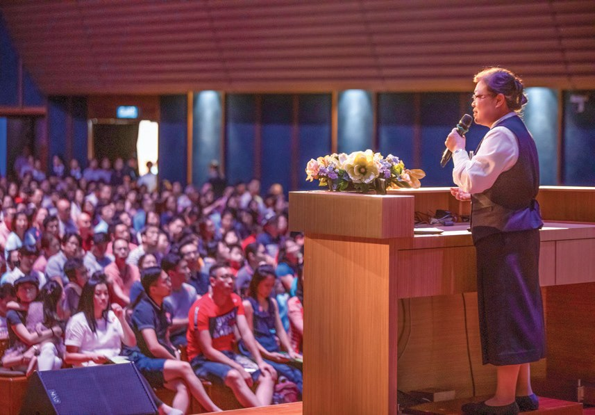
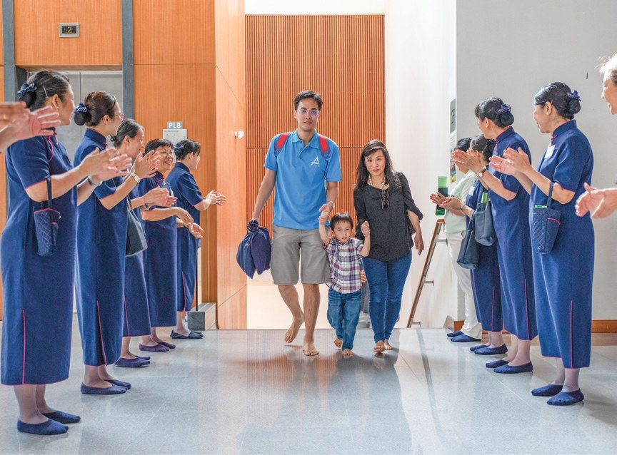
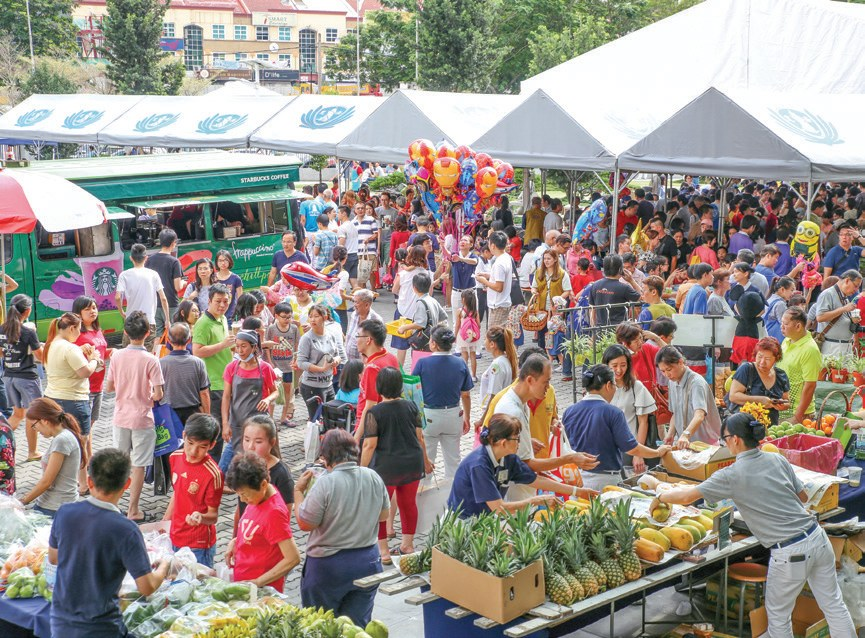
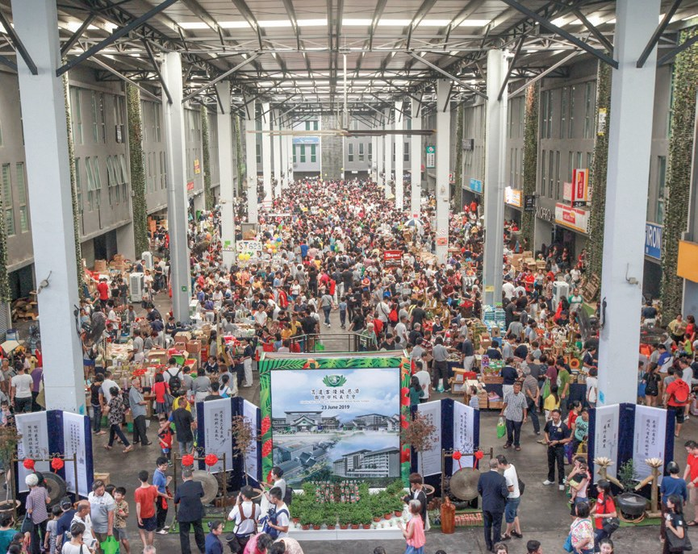
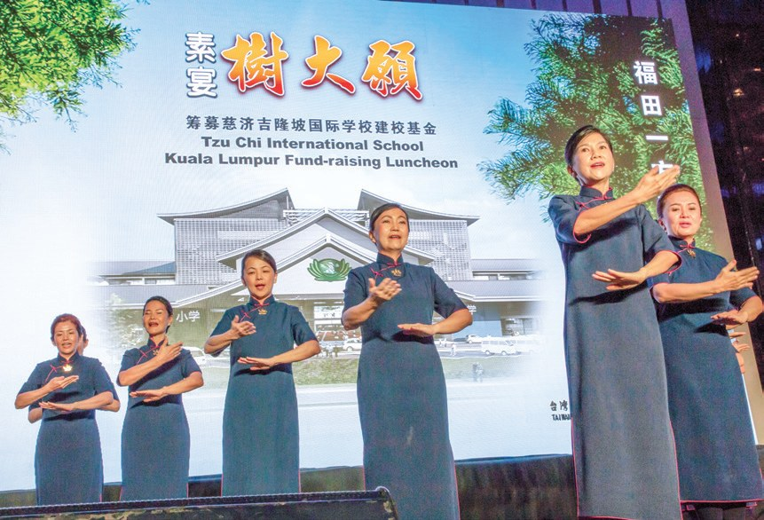
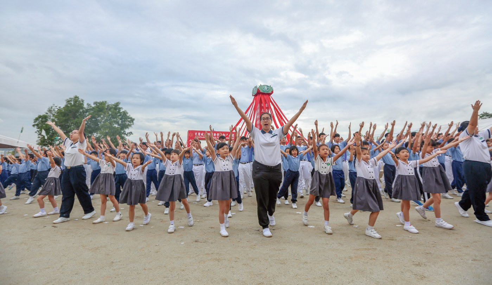

教育是希望工程
蓋一所學校，要多少人的心意？

先別急著下結論，讀完再說說你的想法～
這一篇講吉隆坡慈濟國際學校：從幼兒園、小學到中學，一所以品格教育為優先的學校。
開學兩個多月就遇上疫情；蓋校的錢，有一大部分來自退休校長、87歲婆婆、賣椰漿飯的一家人。
下面是原書的節錄，紅色底線是我們替你標出的轉折點。
讀之前：你覺得一所好學校，最重要的是什麼？
從幼兒園到中學
家長期盼孩子能一路讀上去。閱讀引導
教育是希望工程，每一位校長、老師都是希望工程師。
上人說・p.479家長及教師期盼能有一個更完善的教育體系，從幼兒延伸至小學、中學，甚至大學
「……既然決定要挑擔子，就不要坐著煩惱，挑起重擔就要快步前進。」
上人叮嚀・p.480
就快步向前。

2016年3月，馬來西亞教育部批核辦校准證。


有些家長為了讓孩子能夠順利錄取，更舉家搬遷到吉隆坡。

全家搬過來！
猜一猜閱讀引導
2020年開學時，吉隆坡慈濟國際學校首屆招收了多少位學生？
像爸媽一樣陪伴
三種語言上課，還有一群「懿德爸媽」。閱讀引導

是以國際劍橋IGCSE課程為主，輔以慈濟人文教育課程，以中、英、馬來語教學

三種一起學！
馬來西亞是慈濟在海外第一個成立慈懿會的國家，也是馬來西亞教育體系的先例
將有一群慈誠懿德如爸爸媽媽一樣陪伴、關懷學生。

也有爸媽陪著。
在家也穿制服
開學才兩個多月，就停課了。閱讀引導
因此吉隆坡慈濟國際學校開學才短短兩個多月，就被迫停課。
師生在家中線上學習，仍必須穿制服、梳妝整齊。
也要穿制服？
學習不應該被任何困難所阻礙，無論在哪裡，都可以持續學習。
「記憶是人與人一起共創的，這一次校慶把重點放在大家共創的記憶，而不是物質上，我覺得很棒。」
教師管美瑩說・p.485一磚一瓦的心意
恩俸金、棺材本、五百份椰漿飯。閱讀引導
響應者不僅有實業家，還有更多是志工及會眾小額捐贈的款項
有的人製作釀豆腐、水餃等食物來義賣；有的縫製百衲被、做手工皂等來募款。

在杏壇堅守教育崗位三十五年的謝惠英校長，在2017年退休時，拿到一筆恩俸金，她便想用此圓滿榮董
「……這筆恩俸金放在銀行，只是數字；捐給慈濟國際學校，反而能看見金錢化為磚瓦，建造出有美善、有品德的教育殿堂。」
謝惠英說・p.486變成學校的磚瓦。
87歲的梁亞珍婆婆將自己存了四、五十年的三萬令吉都捐出
「這三萬令吉是我的棺材本，全部捐給學校，我再也沒有半分錢存在銀行。雖然錢沒了，但我很心安，很開心！」
梁亞珍婆婆說・p.487全部捐出來！

在閩南語中「5元」音近「有緣」，胡桂雲希望每個訂購愛心便當的人都與慈濟有緣。

義賣前一天，一家七人徹夜未眠，準備500份椰漿飯，從煮飯、製作佐料，到包裝，全都親力親為。

一夜沒睡。
退休教師林敏君捐出珍藏三十年的首飾來義賣
就像一棵大樹，可以往上成長茂盛，但是根部還是要往下扎得更深更穩。
上人叮嚀・p.491
停一停：誰讓你記住了？閱讀引導
選一位你印象最深的人。沒有標準答案。
有人捐出恩俸金，有人捐出棺材本，有人一家徹夜煮椰漿飯。哪一位讓你最有感覺？

一起回頭看看吧～
回望
依本章原文整理，每一條都標了原書頁碼。閱讀引導
背後原因
為什麼要辦國際學校

小川已經有大愛幼兒園了，為什麼還要辦學校？
- 家長期盼
期盼能有一個更完善的教育體系，從幼兒延伸至小學、中學。p.479
- 籌建學校
開始籌建一所涵蓋幼兒園至中學的學校。p.479
- 品格優先
以美善大愛為基礎，以品格教育為優先。p.481
後續發展
一所學校的誕生

小禾從批地到恢復上課，經過了多少年？
- 2015.12
政府批准使用土地辦校。p.480
- 2016.3
教育部批核辦校准證。p.480
- 2017.9.16
國際學校正式動土。p.480
- 2019.5
4場招生說明會，五千多人參與。p.480–481
- 2020.1.6
正式啟用開學。p.481
- 2021.1
成立一週年。p.485
滴水成河
誰在護持這所學校
小禾蓋學校的錢，從哪裡來？
- 第一圈退休校長
謝惠英捐出恩俸金圓滿榮董。p.486–487
- 第二圈87歲婆婆
梁亞珍捐出三萬令吉棺材本。p.486–487
- 第三圈病人一家
拉克瑪妮一家準備500份椰漿飯義賣。p.490
以上只整理本章寫到的事；書裡沒寫到的，我們不替它下結論。
回頭看讀前的選擇閱讀引導
第一期工程完工後學校正式啟用（p.481）；慈誠懿德像爸爸媽媽一樣陪伴學生（p.483）；建校基金有更多是小額捐贈（p.486）。校舍、陪伴、護持，這所學校三樣都有。
為什麼反而說很心安？
只有你自己看得到喔！
準備好了就一起出發～